The 16 towns before the town plan
Overhead view of each town, 96 × 96 blocks centred on home, drawn from the live world files on 2026-10-20 ~12:12Z. Chests cluster on the home platform; crafting tables and furnaces are scattered across the whole area.
home
chest / barrel
furnace
crafting table
composter
bed / other station
well
dashed white = no-dig zone (16) · dashed yellow = project area (22 / 44)
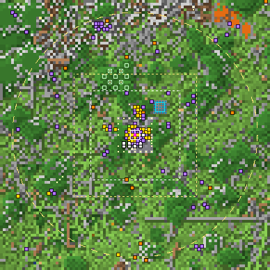
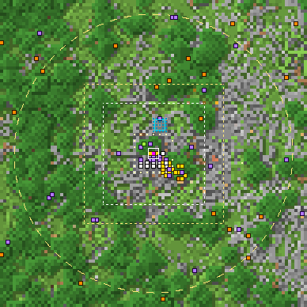
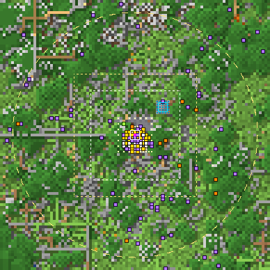
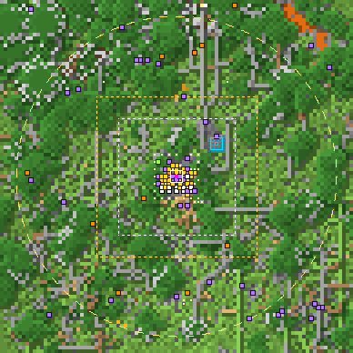
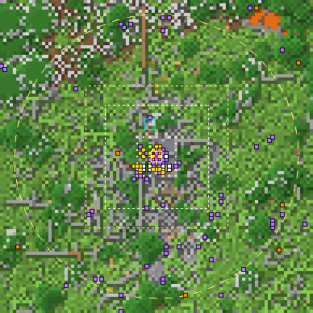
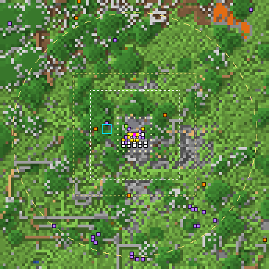
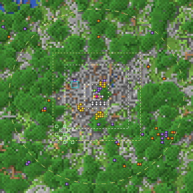
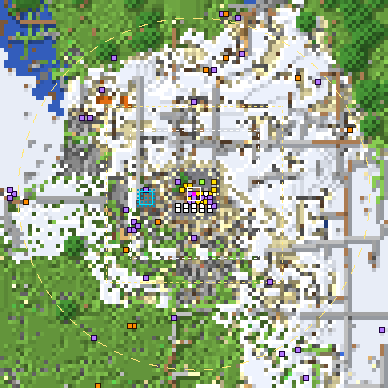
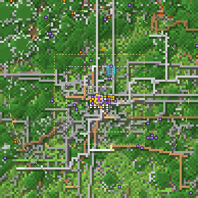
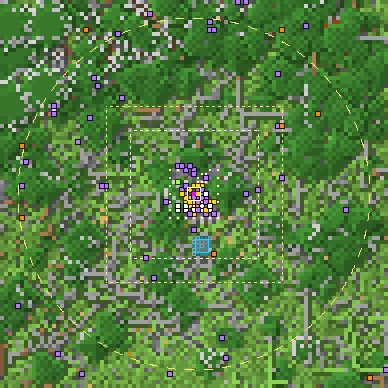
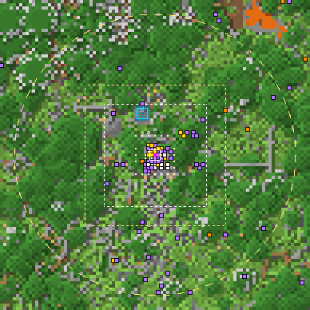
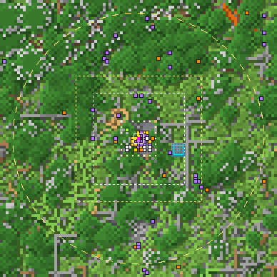
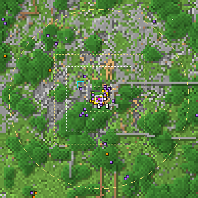
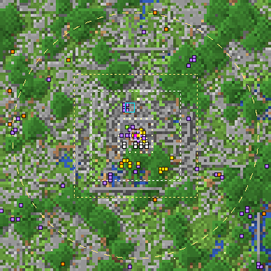
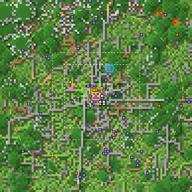
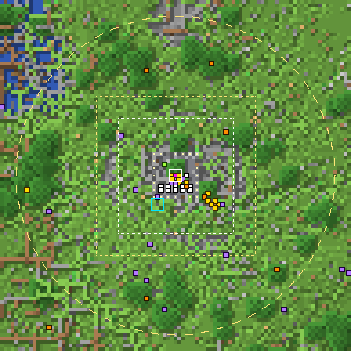